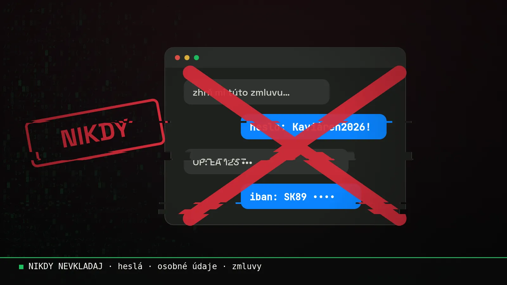

Blog ·
Čo AI nikdy nedávaj. Vážne.
AI ti ušetrí hodiny. Jedna zlá správa do chatu ťa ale môže stáť zákazníka, peniaze alebo pokutu. Tu je, čo do nej nikdy nevkladaj, čo vždy over, a prečo to od roku 2025 nie je len dobrá rada.

Začnem na rovinu: AI nie je tvoj kamoš, ktorý si nechá tajomstvá pre seba. Je to služba na cudzom serveri. Čo do nej napíšeš, už neovládaš ty.
Toto nie je strašenie. Toto sa už stalo. Veľkým firmám aj ľuďom, ktorí si mysleli, že vedia, čo robia.
Dva príbehy, ktoré stoja za zapamätanie
Samsung, 2023. Inžinieri Samsungu nahrali do ChatGPT interný zdrojový kód. Chceli si len pomôcť s prácou. Firma vzápätí zakázala zamestnancom používať ChatGPT a ďalšie AI nástroje na firemných zariadeniach. Dôvod: dáta sú na cudzích serveroch, ťažko sa dajú vymazať a môžu sa dostať tam, kam nemajú.
Právnici v New Yorku, 2023. Dvaja advokáti podali na súd dokument s citáciami súdnych rozhodnutí, ktoré im „našiel“ ChatGPT. Problém? Tie prípady neexistovali. AI si ich vymyslela, aj s menami leteckých spoločností a citátmi. Súd im udelil pokutu 5 000 dolárov a hanba išla po celom svete.
5 vecí, ktoré do AI nedávaj NIKDY
- Heslá, PIN-y, prístupové kódy a kľúče. Ani „len na chvíľu“, ani v screenshote.
- Osobné údaje klientov bez povolenia. Mená s kontaktmi, rodné čísla, zdravie, financie. GDPR platí aj v chate s AI.
- Zmluvy, interné čísla a kód do bezplatných verzií. Niektoré bezplatné verzie môžu tvoje texty použiť na trénovanie, ak to nevypneš. Na firemnú robotu patrí firemný účet.
- Nič neposielaj ďalej neprečítané. Za text zodpovedáš ty. Nie AI, nie „veď to písal robot“.
- Neinštaluj si neznáme AI rozšírenia. Hlavne tie, ktoré chcú prístup k mailu, disku alebo kalendáru.
3 veci, ktoré urob VŽDY
- Over čísla, paragrafy a mená. AI si vie vymyslieť s úplnou istotou. Viď tí advokáti.
- Anonymizuj. Namiesto „Ján Novák, Hlavná 5“ napíš „klient A“. Výsledok bude rovnako dobrý.
- Pri peniazoch over človeka inou cestou. Hlas aj video sa dnes dajú napodobniť. Žiadosť o platbu „od šéfa“ over telefonátom na číslo, ktoré poznáš.
Od roku 2025 to nie je len dobrá rada
Od 2. februára 2025 platí článok 4 európskeho nariadenia o umelej inteligencii (EU AI Act). Hovorí, že firmy, ktoré AI používajú, musia zabezpečiť, aby ich ľudia mali dostatočnú AI gramotnosť. Čiže aby vedeli, čo AI dokáže, kde sú riziká a ako s ňou bezpečne pracovať.
Ak tvoji ľudia vo firme používajú ChatGPT, Claude alebo hocijaký iný AI nástroj, týka sa to aj teba. Certifikát zákon nevyžaduje. Ale „nikto nám nič nepovedal“ už nie je výhovorka.

Na stiahnutie · zadarmo
Bezpečne s AI: 10 pravidiel pre tímJedna strana na vytlačenie do kancelárie, s miestom na podpis. Prvý krok k AI gramotnosti podľa čl. 4.
Stiahnuť PDFMôj pohľad
AI používam každý deň a staviam si s ňou vlastné appky. Práve preto viem, aké ľahké je vložiť do chatu niečo, čo tam nepatrí. Stačí únava, deadline a jedno Ctrl+V.
Pravidlá vyššie nie sú na to, aby si sa AI bál. Sú na to, aby si ju mohol používať naplno a v pokoji. Ak chceš, prejdem ich s celým tvojím tímom na školení, na vašich vlastných veciach.
Chceš si niečo také vyskúšať sám? Na 3-hodinovej session ťa to naučím na tvojich vlastných veciach.
15 min hovor zadarmo